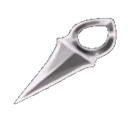
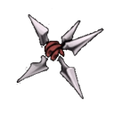

Comandos Essenciais de movimentações
- Mover para cima: tecla
- Mover para baixo: tecla
- Mover para esquerda: tecla
- Mover para direita: tecla
- Pular:
- atacar:
- Correr:
- especial:
Sequencia de ataque Especial
- Pressione + ou +
- Segure +
- pressione + +
Glossário de itens do Jogo
-
Alfinete reto

-
Ferramenta de arremesso leve, projetada para ataques rápidos.
-
Fragmento de Ferrão

-
Armadilha letal formada por lâminas firmemente entrelaçadas. Uma vez colocada, a armadilha perfurará os inimigos que entrarem em contato com ela
Feito por: Natã Cruz Andrade